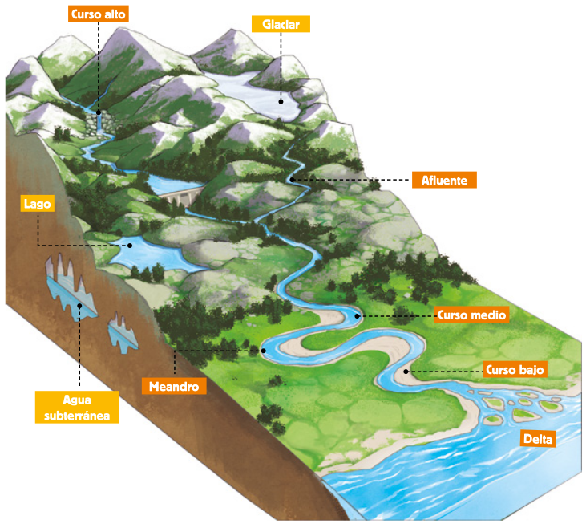

Los ríos son corrientes naturales y continuas de agua dulce que nacen en zonas montañosas, atraviesan valles y llanuras y desembocan en el mar, en un lago o en otro río. Los ríos que desembocan en otro se denominan afluentes.
Principales elementos de un río (Figura: ![[*]](crossref.png) )
)
- Nacimiento es el lugar donde nace o brota.
- Curso es el recorrido desde su nacimiento hasta la desembocadura. Se diferencian tres partes:
- Curso alto es el tramo más cercano a su nacimiento. En este tramo, las aguas corren rápidas y arrastran gran cantidad de arena y piedras, produciendo una gran erosión.
- Curso medio es el tramo entre el curso alto y el curso bajo. Alterna zonas de fuerte erosión con zonas donde se depositan la arena y las piedras debido a los cambios de la pendiente.
- Curso bajo es el tramo próximo a la desembocadura. En esta zona, la pendiente es casi nula y presenta meandros o grandes curvaturas. Debido a la acumulación de los materiales en este tramo se forman deltas y estuarios.
- Cauce es el terreno por donde discurren las aguas del río.
Figura:
Elementos de un río
|

|
Principales características de un río
- Longitud es la distancia entre su nacimiento y la desembocadura.
- Caudal es la cantidad de agua que lleva un río en un lugar y momento determinado.
- Régimen es la variación de caudal a lo largo del año. Es regular cuando no varía a lo largo del año, e irregular, cuando sufre grandes crecidas en épocas de lluvia y está casi seco durante el resto del año.
Estas características diferencian a un río de otro, debido principalmente a dos factores: el relieve y el clima.
- El relieve influye en la longitud y la velocidad de las aguas del río. Los ríos son más largos cuanto más alejadas están las montañas donde nacen del mar en que desembocan.
- El clima repercute en el caudal y el régimen de los ríos. Así, los ríos que atraviesan zonas lluviosas son muy caudalosos y tienen régimen regular. Sin embargo, los ríos que discurren por zonas con climas secos tienen un régimen irregular.